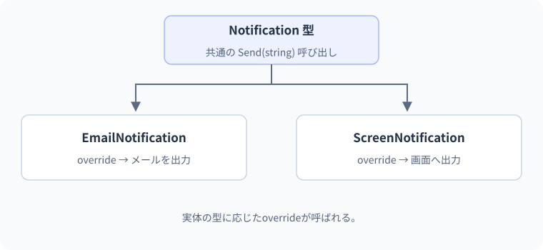

11 継承・virtual・override — 詳細解説
共通の型から異なる処理を呼ぶ。
同じSendの呼び出しで、通常通知とメール通知を切り替えます。コード上の変数の型と、実際に作られたオブジェクトの型を分けることが、overrideを読む手掛かりです。
継承と基底型・派生型の関係
継承は、あるクラスを基に別のクラスを定義する仕組みです。基になる型を基底クラス、そこから作る型を派生クラスと呼びます。共通実装を再利用できますが、単に同じコードを減らしたいから使うだけでは、変更の影響が広がりやすくなります。派生型が基底型として扱われても期待される契約を守れるかを確認します。
ポリモーフィズムとは、共通の型を通して呼び出しても、実際の型に応じた処理を行う仕組みです。通知を送る処理に対し、具体的には画面表示か、別の方法かを切り替えるような場面で役立ちます。ここではまず、図形の面積を求める例で、変数の型と実体の型を分けます。
最小例：virtualとoverride
Shape shape = new Rectangle(3, 4);
Console.WriteLine(shape.Area());
public class Shape
{
public virtual int Area() => 0;
}
public class Rectangle : Shape
{
private readonly int _width;
private readonly int _height;
public Rectangle(int width, int height)
{
_width = width;
_height = height;
}
public override int Area() => _width * _height;
}期待出力は12です。Rectangle : ShapeはRectangleがShapeを継承する宣言です。virtualは派生型で上書き可能なメソッドを宣言し、overrideはその上書きを実装します。shape変数の宣言型はShape、参照する実体の型はRectangleです。virtual呼び出しでは実体に対応する上書き処理が選ばれます。
- 1Shape型の変数shape
使える操作をコンパイル時に確認
- 2Rectangleの実体
幅3・高さ4を保持
- 3shape.Area()
virtualな呼び出し
- 4Rectangle.Area
3×4を計算
- 5戻り値12
呼び出し側で表示
型情報と実際のメソッドへの対応によって呼び出しが選ばれます。JITが対象を確定できる場合は最適化も行いますが、言語上の振る舞いはこの対応で理解します。「変数の型だけで常に呼び出す本体が決まる」と覚えるとvirtualの例を説明できません。
メソッドの隠蔽との違い
newをメンバー宣言へ付けると、ここでは継承した同名メンバーを隠す意味になります。オブジェクトを生成する式のnewとは役割が異なります。隠蔽はoverrideによる実行時の差し替えと同じではありません。
BaseLabel asBase = new DetailedLabel();
DetailedLabel asDerived = new DetailedLabel();
Console.WriteLine(asBase.GetLabel());
Console.WriteLine(asDerived.GetLabel());
public class BaseLabel
{
public string GetLabel() => "基本";
}
public class DetailedLabel : BaseLabel
{
public new string GetLabel() => "詳細";
}期待出力は基本、詳細です。呼び出しで見ている型によって、利用する隠蔽メンバーが変わります。実体が派生型だから必ず派生側が呼ばれるわけではありません。
| 宣言 | 目的 | 呼び出しの特徴 |
|---|---|---|
| virtual + override | 基底型越しの振る舞いを差し替える | 実体の上書きに対応 |
| newによる隠蔽 | 同名の別メンバーを宣言する | 呼び出し側から見える型が重要 |
| 通常の非virtualメソッド | 上書きを公開しない処理 | overrideできない |
| sealed override | その上書きでさらに派生側のoverrideを止める | 設計上の境界を固定 |
本文の実例との対応：共通の型から異なる処理を呼ぶ
次の図は本文の実例「通知方法ごとの出力」を使った補助例です。この節のコードとは変数や入力値が異なるため、処理の対応に注目します。

同名のメソッドを派生型へ書く二つの方法を比較します。
基底型のvirtualを上書き基底型経由でも実体のoverrideが選ばれる
同名の別メンバーを宣言変数のコンパイル時の型で呼び出すメンバーが変わる
newは「新しいオブジェクトを作る式」のnewとは別の使い方です。ここでは、継承したメンバーを同名の別メンバーで隠す指定を指します。
abstractは未完成な契約を明示する
抽象クラスはそれ自身を直接newできないクラスです。抽象メソッドは本体を持たず、具体的な派生型に実装を要求します。上のShape.Areaが0を返すと「どんな図形でも面積0でよい」と誤解される可能性があります。共通の正しい既定実装がないならabstractで未実装を明示できます。
Shape[] shapes = { new Rectangle(3, 4), new Square(5) };
foreach (Shape shape in shapes)
{
Console.WriteLine(shape.Area());
}
public abstract class Shape
{
public abstract int Area();
}
public sealed class Rectangle : Shape
{
private readonly int _width;
private readonly int _height;
public Rectangle(int width, int height)
{
_width = width;
_height = height;
}
public override int Area() => _width * _height;
}
public sealed class Square : Shape
{
private readonly int _side;
public Square(int side) { _side = side; }
public override int Area() => _side * _side;
}期待出力は12、25です。配列の要素型はShapeですが、実体はRectangleとSquareです。ループは型別のifを書かず、共通のAreaを呼びます。sealedはそのクラスからの継承を禁止する指定です。ここではさらに派生させる設計がないことを明示しています。
幅や辺の長さの負数検証は、この小さな面積例では別の課題としています。製品の型として利用するなら、生成時の範囲検証と掛け算の範囲超過も設計します。継承が正しいことと、数値の業務ルールが正しいことは別の観点です。
共通の型だけでは処理の内容を決められない場合は、抽象メソッドとして契約を表せます。
操作の形を宣言引数・戻り値などの契約
overrideで実装具体的な処理の内容
abstract classは直接newして使う完成品ではありません。必要な抽象メンバーを実装した具象クラスを生成して利用します。
境界・比較例：基底処理を利用した拡張
base.Build()は基底クラスの実装を明示的に呼びます。override内から単にBuild()を呼ぶと、自分自身を呼ぶ形になり得ます。
BaseMessage message = new ShippingMessage();
Console.WriteLine(message.Build());
class BaseMessage
{
public virtual string Build() => "注文を確認しました";
}
class ShippingMessage : BaseMessage
{
public override string Build() => base.Build() + " / 発送待ち";
}想定出力
注文を確認しました / 発送待ちコンストラクターの連鎖を観察する
var child = new Child("Aoi");
Console.WriteLine(child.Name);
public class Parent
{
public string Name { get; }
public Parent(string name)
{
Name = name;
Console.WriteLine("Parent本体");
}
}
public class Child : Parent
{
public Child(string name) : base(name)
{
Console.WriteLine("Child本体");
}
}期待出力はParent本体、Child本体、Aoiです。: base(name)は基底クラスのどのコンストラクターを呼ぶか指定します。派生側のコンストラクター本体に入る前に基底側の本体が完了します。フィールド初期化子の評価順序はこの単純な本体の表示順だけから一般化しません。
初期化中のコンストラクターからvirtualメソッドを呼ぶと、派生側の本体による初期化が終わる前に派生実装へ入る場合があります。未完成の状態を利用しないため、コンストラクターから上書き可能な処理を呼ばない設計を基本にします。初期化順の細かい暗記より、初期状態が完成するまで外の振る舞いへ渡さないことが重要です。
単純な基底クラスと派生クラスについて、コンストラクター本体の実行順だけを示します。
- 1派生型をnew
派生の生成を要求 - 2基底の本体
基底側のコンストラクター本体を実行 - 3派生の本体
派生側のコンストラクター本体を実行
これはコンストラクター本体の順序を示す図です。フィールド初期化子や引数式も含めた全ての初期化処理が、この三箱だけで表されるわけではありません。
間違い：overrideしたつもりでnewにする
症状は、派生型を直接使うと期待どおりなのに、基底型の変数を経由すると別の結果になることです。先ほどのBaseLabelの例がそのまま再現例です。確認位置は基底メソッドのvirtual指定と、派生側のoverride指定です。
BaseLabel label = new DetailedLabel();
Console.WriteLine(label.GetLabel());
public class BaseLabel
{
public virtual string GetLabel() => "基本";
}
public class DetailedLabel : BaseLabel
{
public override string GetLabel() => "詳細";
}修正後の期待出力は詳細です。修正前はpublic stringとpublic new string、修正後はpublic virtual stringとpublic override stringです。警告を消すためにnewを付けるのではなく、共通の型から差し替える設計なのかを先に判断します。
継承と委譲の使い分け
委譲とは、自分の仕事の一部を保持している別のオブジェクトへ依頼することです。部品を持って組み合わせる設計を合成とも呼びます。メール送信機能を使いたい注文サービスが「メール送信機能を継承」するより、「送信用の部品を持って呼び出す」方が関係を自然に表せることがあります。
| 方式 | 適する関係 | 注意点 |
|---|---|---|
| 継承 | 派生型を基底型として扱える | 基底の変更が派生へ影響する |
| 合成・委譲 | 部品を持ち、その役割を利用する | どの部品を受け取るかを明示する |
| インターフェイス | 共通の操作を約束する | 共通実装の再利用とは別 |
C#のクラスは直接の基底クラスを一つだけ持ちます。一方、複数のインターフェイスを実装できます。継承階層を増やすほど分かりやすくなるわけではありません。共通の契約だけ必要なら次のLesson 12のインターフェイスも選択肢です。
段階別の練習
基礎課題はShape型の変数へSquare(4)を入れ、Areaが16になる理由を説明することです。標準課題は面積を返す新しい具体型を一つ追加し、ループ本体を変えずに扱うことです。追加した型で抽象メソッドを実装し忘れるとコンパイル時に指摘されます。
応用課題は、型を見てifで分岐する設計と、virtual呼び出しで共通操作を行う設計を比較することです。型別に異なる戻り値が必要なのか、ただ共通値を表示したいだけなのかを先に定義します。何でも継承にすることを正解とせず、契約と変更理由に応じて選びます。
公式資料
確認日：2026年9月14日。本文の理解を補うための資料です。学習対象は.NET 10 / C# 14です。パッチ番号は固定しません。